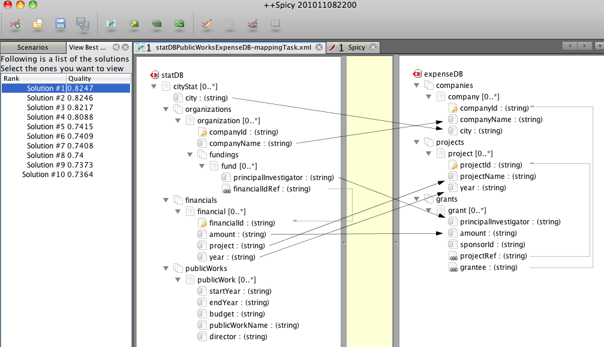

++Spicy Mapping System
Dipartimento di Matematica e Informatica
Università della Basilicata - Potenza, Italy
http://www.db.unibas.it/projects/spicy
Contents
1 Overview
1.1 Description
2 Graphical User Interface
2.1 Main Constructs
2.2 Loading Tgds from Parser
2.3 Spicy Matching Module
3 Main Functionalities
3.1 Executable Scripts
3.2 Chase Engine
4 Advanced Features
1 Overview
This document describes ++SPICY, an open-source schema mapping system developed at the Università della Basilicata by the group lead by Prof. Giansalvatore Mecca. ++SPICY supports data management problems where there is the need to exchange, transform and integrate data. In particular, given a visual specification of the desired transformation between a source schema and a target one, ++SPICY generates the corresponding schema mappings (expressed as source to target dependencies), and then the executable scripts needed to perform the translation with a data exchange semantics.
1.1 Description
The ++SPICY system is an evolution of the original Spicy [2,1] and +Spicy [7] systems. It has been developed in Java using the NetBeans Platform as a basis for the graphical user interface. The system architecture is shown in Figure 1.
 Figure 1: Architecture of ++Spicy
In a typical usage scenario, a user provides to the ++SPICY system a mapping specification using the GUI; in doing this, besides specifying the source and target schema, users can rely on the primitives offered by the system (which we describe in the following).
The mapping specification is then handled by the mapping generation module, which generates the tgds. As an alternative, a parser is available to load a set of pre-defined tgds and egds from text files. The parser generates a scenario from the file and shows it to the user so that she can visually inspect and possibly modify it in the GUI.
At this point, the user has a set of tgds, either generated internally or pre-defined and loaded by the parser. Before moving to the actual query generation phase, the tgds are rewritten by the rewriting engine in order to ensure that optimal (i.e., core) solutions are generated.
Based on these rewritten tgds, an executable query either in SQL or in XQuery can be generated by the query generation engine. The system integrates interfaces to various popular SQL and XQuery engines (like PostgreSQL and Saxon), so that the final query can be executed against one or more source instances and results can be inspected using the GUI. To simplify the debugging of the mapping scenario and to reduce dependencies wrt external systems, ++SPICY also incorporates an internal chase engine to execute the source to target tgds and generate solutions internally. This latter execution is more immediate than sending a query to an external engine, and greatly helps users during their work sessions.
Figure 1: Architecture of ++Spicy
In a typical usage scenario, a user provides to the ++SPICY system a mapping specification using the GUI; in doing this, besides specifying the source and target schema, users can rely on the primitives offered by the system (which we describe in the following).
The mapping specification is then handled by the mapping generation module, which generates the tgds. As an alternative, a parser is available to load a set of pre-defined tgds and egds from text files. The parser generates a scenario from the file and shows it to the user so that she can visually inspect and possibly modify it in the GUI.
At this point, the user has a set of tgds, either generated internally or pre-defined and loaded by the parser. Before moving to the actual query generation phase, the tgds are rewritten by the rewriting engine in order to ensure that optimal (i.e., core) solutions are generated.
Based on these rewritten tgds, an executable query either in SQL or in XQuery can be generated by the query generation engine. The system integrates interfaces to various popular SQL and XQuery engines (like PostgreSQL and Saxon), so that the final query can be executed against one or more source instances and results can be inspected using the GUI. To simplify the debugging of the mapping scenario and to reduce dependencies wrt external systems, ++SPICY also incorporates an internal chase engine to execute the source to target tgds and generate solutions internally. This latter execution is more immediate than sending a query to an external engine, and greatly helps users during their work sessions.
2 Graphical User Interface
 Figure 2: Screenshot of ++Spicy GUI
Figure 2 depicts the main working screen for the system.
The button bar at the top contains three sections. The section on the left has the basic operations to create, load, save mapping scenarios. The central part controls view options to show/hide schema constraints, join conditions, and functional dependencies. The right section gives quick access to the most important operation: generate transformations and translate instances. Rolling over a button explains its operation and the respective keyboard shortcut.
On the left side, the Scenarios panel exposes all the objects involved in the selected working scenario (schemas, instances) and the possible views over the artifacts handled by the system: transformations expressed in logical form, executable scripts, detailed log of the tgds generated by the mapping generation module and their rewriting.
On the right side, the three panels contain the source schema, the manipulation area (yellow background), and the target schema, respectively. The schemas are represented in a hierarchical view of their structure by using nesting of set, records (followed by their min and max cardinality in the set), and atomic elements (followed by their data type between brackets). Join dependencies between elements are show as grey lines connecting elements, by rolling over the joins it is possible to see if they are mandatory or optional, and if they are bidirectional or not.
The tabs over the schemas allow the quick navigation among the opened views for the current scenario.
Figure 2: Screenshot of ++Spicy GUI
Figure 2 depicts the main working screen for the system.
The button bar at the top contains three sections. The section on the left has the basic operations to create, load, save mapping scenarios. The central part controls view options to show/hide schema constraints, join conditions, and functional dependencies. The right section gives quick access to the most important operation: generate transformations and translate instances. Rolling over a button explains its operation and the respective keyboard shortcut.
On the left side, the Scenarios panel exposes all the objects involved in the selected working scenario (schemas, instances) and the possible views over the artifacts handled by the system: transformations expressed in logical form, executable scripts, detailed log of the tgds generated by the mapping generation module and their rewriting.
On the right side, the three panels contain the source schema, the manipulation area (yellow background), and the target schema, respectively. The schemas are represented in a hierarchical view of their structure by using nesting of set, records (followed by their min and max cardinality in the set), and atomic elements (followed by their data type between brackets). Join dependencies between elements are show as grey lines connecting elements, by rolling over the joins it is possible to see if they are mandatory or optional, and if they are bidirectional or not.
The tabs over the schemas allow the quick navigation among the opened views for the current scenario.
2.1 Main Constructs
There are many constructs that users can apply to define the desired transformation, namely:
- 1:1 correspondences
- Express equivalence relationship among atomic elements of the schemas. A correspondence is defined with a drag-and-drop operation: the active (i.e., draggable) area for the source elements is their right part (the datatype area), for the target elements is their left part (the icon);
- n:1 value correspondences
- Let the user define complex transformation functions, as for instance: split(Source.Contact.name, ", ", 1). Right click in the manipulation area to create a new function, add the elements that need to be transform (at least one) and then double click to "open" the black box and define the function1;
- duplicate sets
-
Let the user duplicate sets in the source and in the target to express complex mappings, for instance, when self-join are involved. Each duplication of a set R corresponds to adding to the data source a new set named R k, for some k, that is an exact copy of R. Right click on a set to create a duplicate for it;
- arbitrary join-conditions in the sources
- In addition to joins corresponding to foreign key constraints in the schema, users can specify arbitrary join paths, including self-joins. Joins are defined with drag-and-drop operations among elements of the same schema. It is also possible to define more complex join (for instance with two pairs of attributes) by right-clicking near a schema and activating a Multiple Join Session: a pop-up window appears when a new join is defined and following joins are added as long as the window is kept open;
- filters
- Allow users to express selection conditions on source sets, like companyName = 'IBM' on the financials table. Right click on a source set to add a selection condition; the condition will be shown next to the set name;
- constant correspondences
- Let the user define a constant value over the target instance. Right click in the manipulation area to create a new constant, double click on the box to define it, then add a correspondence to the constant to the target element of interest;
- functional dependencies
- Users can define new functional dependencies (i.e., egds) over the attributes.
Right click in the manipulation area to create a new functional dependency icon: elements related with incoming arrows compose the determinant set, while elements pointed from the new icon compose the dependent attributes.
All the constructs can be erased with a right-click on the construct followed by delete.
2.2 Loading Tgds from Parser
An alternative input can be provided to the system by using its mapping parser. Given a set of standard s-t tgds (hand written or generated with another mapping system), ++SPICY load them in the GUI, thus providing a graphical representation of the scenario, and is able to rewrite them to obtain optimal solutions as well.
The input text file is composed of four parts. In the first part it is described where to find the schemas and the source instance. Interestingly, schemas can be generated directly the s-t tgds, which are listed in the second part of the file.
Notice that tgds are required to details the labels of the attributes, followed by the associated variables marked with a dollar sign (e.g., LivesIn(name: $x41, city: $x42) -> Home(homeName: $x41, homeCity: $x42)). Every s-t tgd ends with a dot.
In the third part source and target functional dependencies are defined (e.g., EmpCity : empName -> empCity [pk]. Finally, the source instance can also be defined in the file and will be automatically load in the system for tests (e.g., LivesIn(name: Älice", city: "SF").
See the example files "scenario.tgd" in the sample scenarios distributed with the system for more details.
2.3 Spicy Matching Module

Figure 3: Screenshot of the matching module.
The ++SPICY system is an evolution of the original Spicy project [2,1], which focused on the automatic matching of elements between schemas. In particular, Spicy introduced a module to match instances of the two schemas (when available) in order to verify not only the correspondences, but also the quality of the schema mapping derived.
The Spicy module can be opened from the system toolbar. The Matcher is able to get possible correspondences from the schema, but it needs an input and a target instances to exploit possible alternative schema mappings and rank them. Input and target instances can be loaded with the DataSource menu in the system toolbar.
Once the transformations are generated with "Find Best Mappings", they are presented to the user ranked with their quality wrt the given instances, so that she can browse the alternatives and pick the most promising mapping. See Figure 3.
3 Main Functionalities
Once the mapping scenarios is defined, users can compile it with the system to get the dependencies with the buttons at the top.
The Transformations Window exposes all the mapping data, including details over the schemas, their constraints, the original s-t dependencies and their rewritings to enforce target egds and compute optimal solutions.
3.1 Executable Scripts
Once the mapping has been compiled in its logical form, it is possible to generate the corresponding executable scripts (XQuery or SQL) from the Scenarios panel or from the system bar under the Map menu. Scripts generated by the system have been tested on PostgreSQL and Saxon and have been proved to be scalable to large database in most of the scenarios used in our experiments (see [5,6,4] for details on execution times).
As an alternative, it is possible to compute the target instance by using the internal engine that we detail next.
3.2 Chase Engine
For user convenience, an internal engine chases the source to target dependencies produced by the rewriting algorithms. The output is the same of the executable scripts and the performance are acceptable for user interaction with instances up to a few thousands tuples.
The input instance can be defined with the DataSource menu in the system toolbar.
 Figure 4: Screenshot of the Instance Window.
The target instance generated by the engine can be observed in the "Instances Window", as shown in Figure 4. Notice that the system let the user compare the canonical universal solution and the core solution. Moreover, a right click on the right panel reveals some internal technical information that can be useful for debug. For instance, the provenance metadata reports for each record from which s-t tgd it has been created.
Figure 4: Screenshot of the Instance Window.
The target instance generated by the engine can be observed in the "Instances Window", as shown in Figure 4. Notice that the system let the user compare the canonical universal solution and the core solution. Moreover, a right click on the right panel reveals some internal technical information that can be useful for debug. For instance, the provenance metadata reports for each record from which s-t tgd it has been created.
4 Advanced Features
The following features highlight why the ++SPICY system is a very sophisticated tool. Many of the advanced features can be enabled and disabled from the Configuration panel, which can be accessed with a right click on the Scenarios panel.
A key contribution of data exchange research is the formalization of the notion of core [3], which is identified as an "optimal" solution.
The ++SPICY system contains an algorithm to rewrite s-t tgds in order to obtain core solutions with executable scripts. This core computation approach allows a very efficient execution that scales well to large databases. We refer the reader to [5,6] for details. By default, the core rewriting is selected in the Configuration panel.
Core-oriented rewriting algorithms have been extended to handle a very large class of mapping scenarios including target functional dependencies, i.e., target egds in data exchange terminology. This means that ++SPICY generates solution that satisfy the target egds by using source to target dependencies only (and therefore, transformations that can be materialized with common executable languages). See [4] for details.
By default, the egd rewriting is deselected in the Configuration panel.
A crucial technical feature of ++SPICY is the management of the Skolem values, i.e., the way the system choose a value for a labeled null in the solution.
By default, in the internal engine Skolem values are materialized as integers in the solution, this can be changed selecting "Use Skolem Strings" in the Configuration panel.
In the SQL executable scripts, by default Skolem values are materialized as integers or string in the solution, depending from the target datatype of the element; this can be changed to integers selecting "Skolem Table" in the "Skolem Table Strategy" menu, or it can be changed to string selecting selecting "No Skolem Table". The "Use Hash Text" can improve the execution time performance of the SQL scripts, but does not guarantee that the solution is the core.
References
- [1]
-
B. A., M. G., P. A., R. S., and S. G.
The spicy system: towards a notion of mapping quality.
In SIGMOD Conference, pages 1289-1294, 2008.
- [2]
-
A. Bonifati, G. Mecca, A. Pappalardo, S. Raunich, and G. Summa.
Schema Mapping Verification: The Spicy Way.
In EDBT, pages 85 - 96, 2008.
- [3]
-
R. Fagin, P. Kolaitis, and L. Popa.
Data Exchange: Getting to the Core.
ACM TODS, 30(1):174-210, 2005.
- [4]
-
B. Marnette, G. Mecca, and P. Papotti.
Scalable data exchange with functional dependencies.
PVLDB, 3(1), 2010.
- [5]
-
G. Mecca, P. Papotti, and S. Raunich.
Core Schema Mappings.
In SIGMOD, pages 655-668, 2009.
- [6]
-
G. Mecca, P. Papotti, and S. Raunich.
Core Schema Mappings: Scalable Core Computations in Data Exchange.
Technical Report Spicy WR-01-2011, Dipartimento di Matematica e
Informatica - Università della Basilicata, 2010.
- [7]
-
G. Mecca, P. Papotti, S. Raunich, and M. Buoncristiano.
Concise and Expressive Mappings with +SPICY.
PVLDB, 2(2):1582-1585, 2009.
Footnotes:
1For a list of available functions and details refer to the JEP library (version 2.4.1) at http://www.singularsys.com/jep
File translated from
TEX
by
TTHgold,
version 4.00.
On 24 May 2011, 18:58.